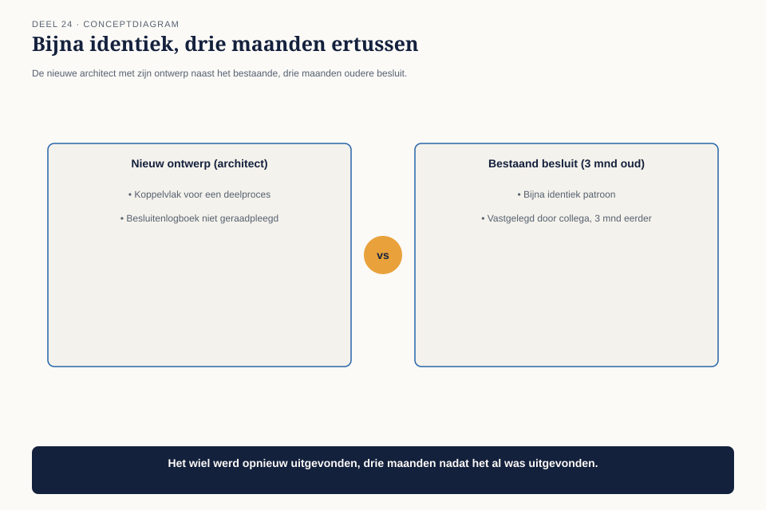
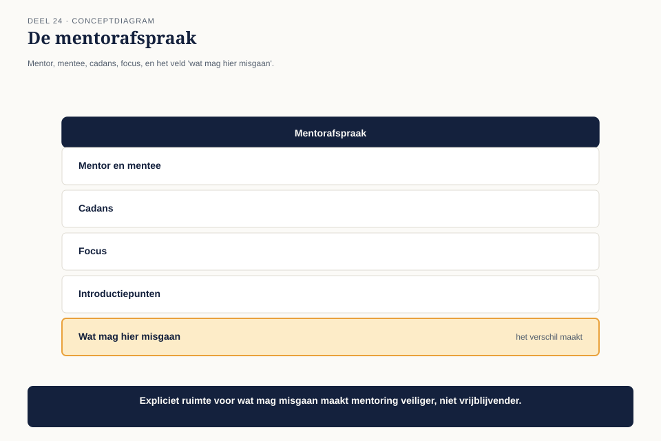
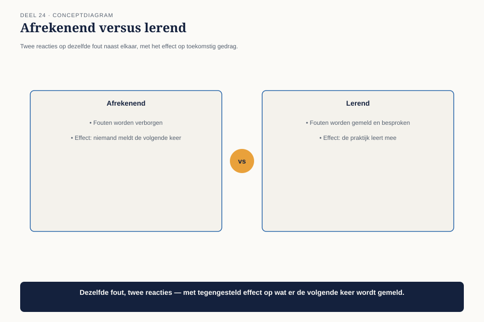

Cursus BTABoK · Niveau 3 (CITA-S / CITA-P) · Deel 24 van 30
Mentoring en ontwikkeling
De praktijkladder uit deel 23 beschrijft vier rollen en de criteria om ertussen te bewegen. Dit deel gaat over wat er dagelijks moet gebeuren om iemand daadwerkelijk van de ene trede naar de andere te krijgen: mentoring. Zonder een expliciete mentoringstructuur blijft een ladder een document op papier, geen praktijk. Aan het eind van dit deel kun je:
7secties
±2udagdeel + huiswerk
4controlevragen
4figuren
Positionering. Deze cursus bereidt je voor op de Iasa-certificeringen en is uitdrukkelijk géén vervanging van het officiële examen- en cursusmateriaal van Iasa.
Niveau 3: ❶ De architectuurpraktijk → ❷ Mentoring en ontwikkeling (hier) → ❸ Community of practice → ❹ Board-communicatie → ❺ Strategische breedte → ❻ Risicobeheer en continuïteit op praktijkschaal → ❼ Gedragscode voor senior architecten → ❽ Het board-dossier en de afsluitende verdediging
01
Waar dit deel over gaat
⏱ 8 min
De praktijkladder uit deel 23 beschrijft vier rollen en de criteria om ertussen te bewegen. Dit deel gaat over wat er dagelijks moet gebeuren om iemand daadwerkelijk van de ene trede naar de andere te krijgen: mentoring. Zonder een expliciete mentoringstructuur blijft een ladder een document op papier, geen praktijk.
Aan het eind van dit deel kun je:
een mentorafspraak opstellen die concreet maakt wie welke verantwoordelijkheid draagt;
het verschil toepassen tussen een cultuur die fouten afstraft en een cultuur die fouten als leermateriaal behandelt, nu op praktijkniveau;
een terugkerend feedbackritme inrichten dat past bij de schaal van een groeiende praktijk.
02
De fout van een beginnend architect
⏱ 8 min
Zes weken na de start van de Wtp-architectuurpraktijk maakt een net aangenomen beginnend architect een kostbare fout: hij ontwerpt een koppelvlak voor een deelproces zonder eerst het gedeelde besluitenlogboek (deel 17) te raadplegen. Een bijna identiek patroon bestond al, vastgelegd door een collega drie maanden eerder. Het gevolg is twee weken herbouw.

Figuur 24-1 — de nieuwe architect met zijn ontwerp naast het bestaande, drie maanden oudere besluit — bijna identiek
Claudette’s eerste reactie is teleurstelling, maar bij nader onderzoek blijkt er geen sprake van onzorgvuldigheid: niemand had deze architect ooit verteld dat het besluitenlogboek bestond, laat staan hoe je het raadpleegt. Er was geen mentor toegewezen, geen introductietraject, geen enkel moment waarop deze kennis werd overgedragen.
Controlevraag
Uit Werkboek deel 24, Opdracht 4 — Het introductietraject
1Het introductietrajectToon antwoord
In groepen van drie tot vier, 20 minuten
Stel een lijst op van de vijf belangrijkste dingen die een nieuwe collega in jullie vakgebied binnen de eerste maand zou moeten kennen — vergelijkbaar met de introductiepunten uit 24.3. Wie zorgt er momenteel voor dat dit gebeurt, en gebeurt het consistent?
Uitwerking
Geen modelantwoord. Verwacht resultaat: bij navraag blijkt vaak dat de introductie van nieuwe collega’s informeel en persoonsafhankelijk verloopt, zonder vaste lijst — precies het probleem dat bij de beginnend architect in 24.2 speelde.
03
De mentorafspraak
⏱ 8 min
De eerste competentie van dit deel is een instrument dat mentoring net zo expliciet maakt als elke andere afspraak in deze cursus.

Figuur 24-2 — de mentorafspraak als kaart — mentor, mentee, cadans, focus, en het veld "wat mag hier misgaan"
Veld
Inhoud
Mentor en mentee
wie is gekoppeld aan wie
Cadans
hoe vaak, en in welke vorm (wekelijks kort, tweewekelijks langer)
Focus
welke competenties uit de praktijkladder (deel 23) staan centraal voor deze mentee
Introductiepunten
de instrumenten die elke nieuwe architect binnen de eerste maand moet kennen — besluitenlogboek, patroonkaart, opdrachtblad
Wat mag hier misgaan
expliciet benoemde, veilige fouten — ruimte om te oefenen zonder dat het als falen wordt gezien
Het laatste veld is, zoals gebruikelijk in deze cursus, het veld dat het verschil maakt. Zonder een expliciete afspraak over welke fouten binnen de leercurve vallen, wordt elke fout — groot of klein — hetzelfde behandeld, en dat ontmoedigt precies het soort experimenteren waardoor mensen leren.
Controlevraag
Uit Werkboek deel 24, Opdracht 1 — De mentorafspraak
1De mentorafspraakToon antwoord
Individueel, 20 minuten
Stel een mentorafspraak op voor een (bestaande of denkbeeldige) mentor-mentee-relatie in je eigen omgeving. Vul alle vijf velden in, inclusief “wat mag hier misgaan.”
Uitwerking
Geen modelantwoord. Verwacht patroon: het veld “wat mag hier misgaan” is het minst vertrouwde om in te vullen — veel deelnemers hebben nog nooit expliciet vastgelegd welke fouten binnen de leercurve vallen. Dat is precies de bevinding die deze oefening moet opleveren.
04
Een cultuur die fouten als leermateriaal behandelt, op praktijkniveau
⏱ 8 min
De tweede competentie herhaalt een inzicht uit deel 4 (niveau 1) — wat er gebeurt na een fout is een van de scherpste signalen van de werkelijke cultuur — maar tilt het naar het niveau van een hele praktijk in plaats van één team.

Figuur 24-3 — twee reacties op dezelfde fout naast elkaar — afrekenend versus lerend, met het effect op toekomstig gedrag
Claudette kiest ervoor de fout van de beginnend architect niet individueel te bespreken maar — met zijn toestemming — als leermoment voor de hele praktijk te gebruiken: een korte sessie waarin het gedeelde besluitenlogboek nog eens wordt doorgenomen, zonder de naam van de architect te noemen als schuldige. De boodschap die dit uitzendt: een gemiste stap is een systeemfout (geen introductietraject) totdat het tegendeel blijkt, niet automatisch een persoonlijke tekortkoming.
Waarom dit ertoe doet op praktijkschaal
Bij één architect (zoals in niveau 1 en 2) is een afrekenende cultuur een probleem voor die ene relatie. Bij een praktijk van acht tot tien architecten wordt een afrekenende cultuur een systeemeigenschap: iedereen leert tegelijk om fouten te verbergen in plaats van te melden, en de praktijk als geheel verliest zijn vermogen om te leren.
05
Een feedbackritme dat past bij de schaal
⏱ 8 min
De derde competentie regelt de frequentie en vorm van feedback op praktijkniveau. Bij één mentor-mentee-relatie (zoals informeel bij Mutatieplatform) volstond een ad-hoc gesprek. Bij acht tot tien architecten, elk met hun eigen mentor, ontstaat het risico dat feedback inconsistent wordt — sommige mentees krijgen wekelijkse aandacht, andere maandenlang niets.
Figuur 24-4 — een feedbackritme-kalender — vaste, korte contactmomenten per mentorkoppel, gesynchroniseerd met het kwartaalritme uit deel 19
Het instrument: een vast, licht feedbackritme, gekoppeld aan hetzelfde kwartaalmoment als de roadmap (deel 19) en de stakeholderkaart (deel 17). Elk kwartaal: een kort overzicht per mentee, waar hij op de praktijkladder staat, en welk introductiepunt of groeicriterium als volgende aan de beurt is. Dit vervangt geen wekelijks persoonlijk contact — dat blijft aan het mentorkoppel zelf — maar zorgt dat niemand structureel buiten beeld valt.
Controlevraag
Uit Werkboek deel 24, Opdracht 3 — Het feedbackritme
1Het feedbackritmeToon antwoord
Individueel, 15 minuten
Ontwerp een licht, kwartaalgebonden feedbackritme voor een team of praktijk uit je eigen werk. Aan welk bestaand ritme zou je het koppelen, zoals Claudette deed met de roadmap en de stakeholderkaart?
Uitwerking
Geen modelantwoord. Beoordeel op: is het ritme gekoppeld aan een bestaand moment (zoals in 24.5), of wordt er een nieuwe, aparte afspraak gecreëerd? Het eerste is de sterkere keuze — minder overhead, hogere kans dat het daadwerkelijk gebeurt.
06
Terug naar de beginnend architect
⏱ 8 min
Drie maanden na zijn fout heeft de beginnend architect, met een toegewezen mentor en een expliciete mentorafspraak, zijn eerste zelfstandige koppelvlakontwerp voltooid — deze keer na het besluitenlogboek te hebben geraadpleegd, met een verwijzing naar het patroon dat hij eerder had gemist. Dat is precies het groeicriterium uit de praktijkladder (deel 23) voor de overgang naar Architect, en Claudette markeert het als zodanig.
07
Kernbegrippen
⏱ 8 min
Begrip
Betekenis in deze cursus
Mentorafspraak
Ductus-werkvorm: mentor, mentee, cadans, focus, introductiepunten, en expliciet “wat mag hier misgaan”
Systeemfout versus persoonlijke tekortkoming
een gemiste stap is eerst een ontbrekend introductietraject, niet automatisch een individuele fout
Feedbackritme op praktijkschaal
een vast, licht, kwartaalgebonden overzicht per mentee, naast het informele contact van het mentorkoppel zelf
Controlevraag
Uit Werkboek deel 24, Opdracht 2 — Systeemfout of persoonlijke tekortkoming
1Systeemfout of persoonlijke tekortkomingToon antwoord
In tweetallen, 15 minuten
Bespreek een fout die je zelf hebt meegemaakt (eigen fout of die van een ander). Was de reactie van de organisatie destijds gericht op het systeem (ontbrekende introductie, ontbrekend instrument) of op de persoon? Wat zou een systeemgerichte reactie hebben opgeleverd?
Uitwerking
Geen modelantwoord. Sterke antwoorden herkennen het patroon uit deel 4 (niveau 1): wat er gebeurt na een fout is het scherpste signaal van de werkelijke cultuur, ongeacht wat de officiële kernwaarden beweren.
Verder naar deel 25
Deel 25 — Community of practice — bouwt voort op wat hier is behandeld.